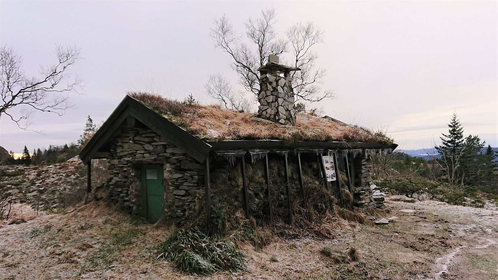

Bergen - Ravneberghytten - Sandvikeshytten - Ankerhytten
En regntur fra byen, opp Munkebotn og over fjellet til Ankerhytten.
Først må du komme deg ut av byen. Det er lenger enn du tror. Du går langs asfalten, stadig bortover, mens regnet trommer mot alle paraplyene som haster mot hjemmene sine. Så begynner motbakken, plutselig, som en vegg, og det er fortsatt asfalt du går på. Asfaltert motbakke, det er den tyngste motbakken som finnes. Under deg hører du drønnet fra Fløyfjellstunnelen. Asfalten snirkler seg videre oppover, forbi Munkebotn, forbi hotellet. Det er stillere nå, men du er fortsatt i byen. Veien har begynt å bukte seg. Svingene blir lengre og lengre, og du begynner å bli varm. Maskineriet i kroppen er i full sving. Du høres din egen pust tydeligere nå. Du puster tyngre, ja, men det er også stillere rundt deg. En og annen turgåer i sydvest kommer deg i møte, hilser, du hilser tilbake. Og så merker du det, asfalten forsvinner unna beina dine, og nærmest i samme øyeblikk får du øye på Munkebotsvatnet. En annen dag kunne du sett ettermiddagssolen fra sør-vest glinse over det svarte vannet, men i dag regner det, og vannet som kunne glinset, danser istedenfor. Veien flater ut, pusten din roer seg ned, men du stopper ikke, du fortsetter like forbi vannet, og plutselig åpenbarer den seg: stien din. Det er nå klatringen begynner, den ekte motbakken. Du vet at fra dette punktet har du sannsynligvis truffet på din siste forbipasserende. Du sier farvel til grusen og ønsker velkommen til jord, steiner og røtter. Fjellet tester deg nå. Det er bratt, og du irriterer deg over ryggen din som begynner å bli svett, men til gjengjeld er du omringet av trær og steinknauser. Lydbildet er nå fullstendig dominert av regnet og trærnes symbiose, om ikke, til og med, symfoni. Du tenker på regnskogen. Tunge regndråper mot irrgrønne blader og vindens rasling, å slik en lyd… du stopper et sekund, dette er et godt øyeblikk å finne frem vannflasken for en slurk. Utsikten er annerledes enn du er vant til, men spektakulær, og plutselig, i det du går videre, skimter du en rød hytte mellom trærne der fremme. Ravneberghytten. Den er alltid nymalt, tenker du, men her er du likevel alltid alene. Hvem eller hva som ferdes i denne hytten vites ikke. Du setter deg på trammen utenfor og finner frem termosen, du har fortjent en kaffe. Mens du sitter der, alene, begynner du gjerne å se for deg det enkle liv ute i naturen et sted, du forestiller deg å låse deg inn i Ravnenerghytten og fyre i peisen mens mørket legger seg over fjellet som et lokk. Men du kan ikke sitte for lenge, videre flater skogsveien ut og du får en mild start, men her er det lett å skli, det vet du, så du tar det rolig. En trapp dukker opp, den er bratt, og du må nærmest klyve opp som i en stige. Fjellet tester deg igjen nå… det er bratt, og du må ta noen lange steg for å forsere de største steinene. Heldigvis venter det en gulrot rett rundt hjørnet: Sandvikshytten, den staute. Den kommer bardust på deg, men det er viktig at du også her setter deg ned. Det blåser her, som vanlig, så du blir ikke sittende lenge her heller. En siste krampetrekning opp den bratte fjellveggen og så når du plutselig et fjellplatå. Trærne har forsvunnet, bare i løpet av et par steg. Utsikten slår mot deg, med selveste vidden i ryggen nå, men det blir en annen dag. Nå går du langs platået med den stadige panomarama-utsikt til høyre, av byen du kommer fra. Heier av lyng omgir deg, kampesteiner kledd i mose, og under føttene er det myr. Du går gjennom noen ganger, kjenner skoen fylles opp av myrvann, men det er ikke noe å gjøre med, sånn er det bare. Du har nådd ditt høyeste punkt, men reisen er ikke fullført. Pusten er rolig nå, og det trengs, for nå skal du gjøre noe som er vanskelig og krever konsentrasjon: du må klatre - nedover. Der, nedenfor en bratt li, over en knaus og ned igjen, gjennom skråningen, der ligger det, like ved tjernet. Turens endemål: Ankerhytten. Beina skjelver etter den bratte nedstigningen, men du tar deg så klart tid til å undersøke ankeret som ligger der, du tenker på eksplosjonen i vågen… det er viktig at du gjør, før du går bort til selve hytten og leser på skiltet som er spikret i veggen, smiler i det du leser: 1898: Bygget av 6 ungdommer fra Sandviken.
Takk for turen,
HH